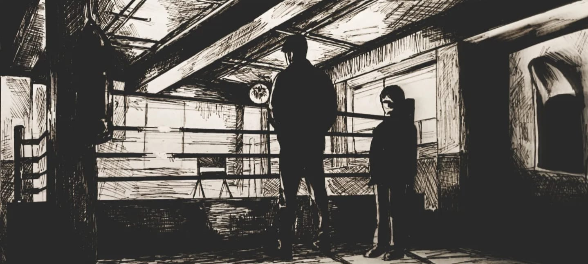
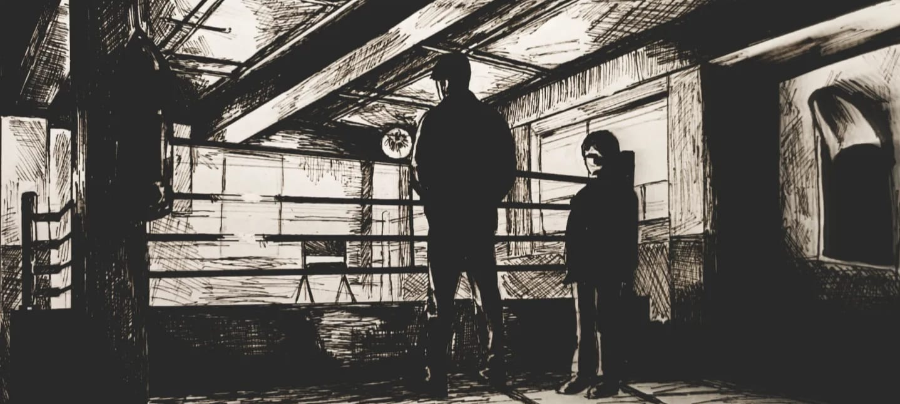

Qui je suis ?
Je suis Manita, une étudiante en informatique âgée de 20 ans.
Actuellement, je suis à la recherche d'une entreprise qui pourrait m'accueillir en alternance, comme vous l'aurez compris !
Ma passion pour l'informatique a débuté dès la terminale. Ensuite, elle s'est développée pendant les 3 années de ma licence
en informatique à Lyon 1.
C'est à ce moment-là que j'ai décidé de postuler à 3IL, une école d'ingénieurs, pour me lancer dans une nouvelle aventure.
J'ai choisi cette école pour me rapprocher de mon entourage à Limoges et pouvoir effectuer une alternance en tant
qu'ingénieur informatique. Née à Lyon, je souhaiterais passer les périodes en entreprise dans ma ville natale tout
en restant avec ma famille proche lors des périodes en entreprise !
Vous pourrez découvrir ci-dessous mes différents projets ainsi que mon parcours académique.
En dehors de ma vie académique, je m'investis pleinement dans le monde de l'art, que ce soit à travers
le dessin, la photographie ou la construction dans le jeu Minecraft.
J'aime à penser que je suis une personne gentille, sérieuse et à l'écoute des autres. N'hésitez pas à me contacter si
vous souhaitez en savoir plus ou discuter de collaborations éventuelles !


 



{kind=link}